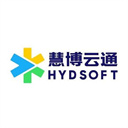
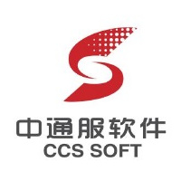
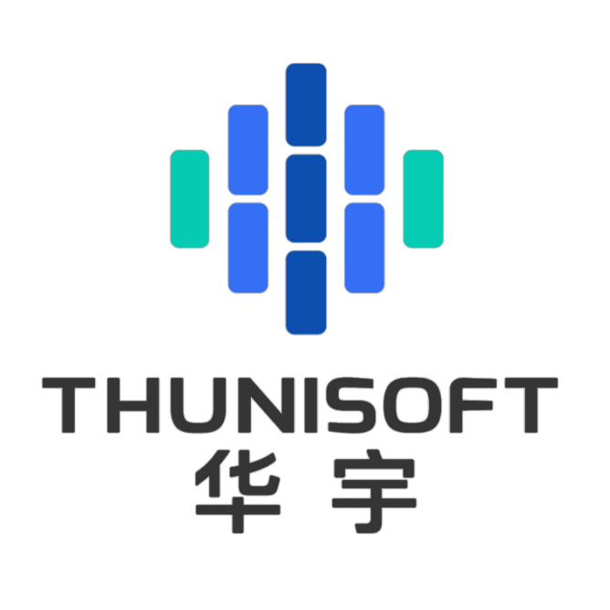
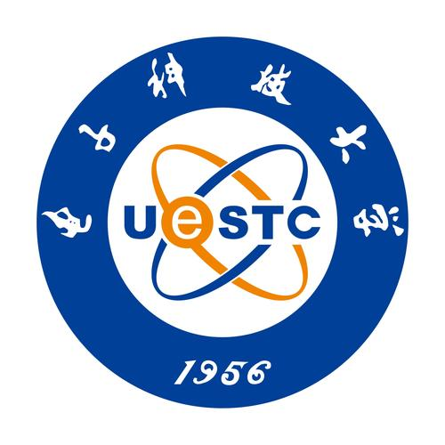
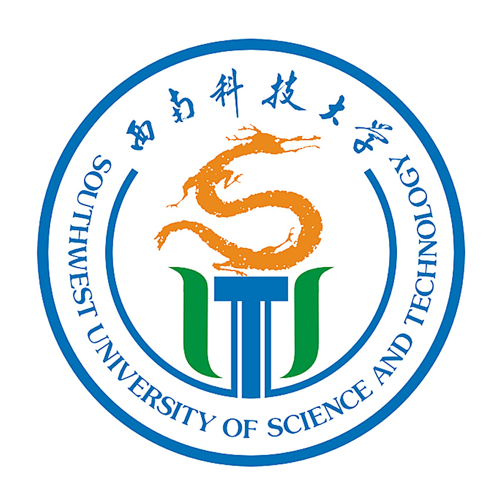
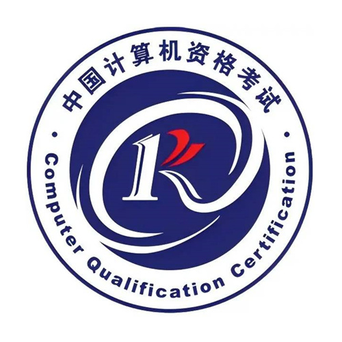

汪宏伟
男 | 年龄：35岁
12年工作经验 | 求职意向：运维开发工程师 | 期望城市：成都
持续学习，持续成长，做技术与责任并重的工程师。
个人优势
深耕运维领域12年，具备从传统IDC到现代云原生体系的全栈技术视野与实战经验。 擅长通过自动化工具链与稳定性体系建设，驱动运维效率提升、资源成本优化与系统高可用保障。
云与虚拟化
- OpenStack、VMware vSphere等私有云平台
- 阿里云、天翼云等公有云服务
- 精通资源池化、高可用架构设计
容器与云原生
- Kubernetes、Helm、Docker、GitOps
- 百节点级生产集群规划、部署、运维与性能调优
存储系统
- Ceph（块/文件/对象存储）
- 精通CRUSH Map调优、性能诊断与容量规划
- PB级集群运维经验
自动化与开发
- Python、Shell、Ansible、Terraform
- 运维工具与CI/CD流水线开发实战经验
监控与网络
- Prometheus、Grafana、Zabbix、ELK
- 数据中心网络规划，精通VLAN、IPSec、策略路由等配置
工作经历

慧博云通科技股份有限公司运维开发工程师2024.07-至今

- 专家技术支持：作为三线运维专家，深度处理客户复杂操作系统问题，年均闭环疑难案例200+，客户满意度达98%
- OS生态构建：主导CTyunOS用户态4000+软件RPM包的迭代开发与生态维护，通过建立自动化构建系统，将软件包交付周期缩短40%
- 性能诊断与调优：针对云主机性能及网络I/O瓶颈，实施内核参数调优与模块诊断，在典型高并发场景下将系统吞吐性能提升15%

中通服软件科技有限公司运维开发工程师2021.08-2024.03

- 多云资源池统一运维：全面负责上海生产资源池的稳定运行，涵盖VMware、OpenStack及公有云资源，实现年度SLA 99.95%
- 云原生应用部署：基于OpenShift构建容器平台，通过Docker化与CI/CD标准化，支撑10+项目200+应用实现自动化部署，资源交付效率提升70%
- 分布式存储优化：独立负责Ceph集群的架构设计和性能调优，完成两次无损扩容，集群三年内保持99.99%的可用性

北京华宇信息技术有限公司运维工程师2019.08-2021.08

- 私有云从0到1建设：独立负责成都研发中心私有云的整体搭建和运维，以及VM全生命周期管理，为上百名开发者提供IaaS服务
- 构建监控日志中心：部署Zabbix、Prometheus+Grafana及ELK栈，实现基础设施的全栈可观测性，将MTTD（故障平均发现时间）从小时级降至分钟级
- 网络架构升级：主导新办公区网络规划，设计并实施三层网络架构，管理30+台网络设备，保障了百人团队零中断接入
前锦网络信息技术（上海）有限公司运维工程师2017.08-2019.08
- 负责研发中心基础设施运维，并参与自动化运维体系建设
绵阳市安州区文化广电新闻出版局技术助理2013.10-2017.02
- 从事传统IT系统与网络运维，奠定扎实的基础设施管理功底
项目经历
中国通服上海云资源池运维项目云计算运维工程师、云基础设施负责人2022.01-2024.03
- 项目背景：所管理的上海核心生产资源池（1500+VM，8集群，800TB+存储）面临性能波动与故障定位效率低的挑战
- 网络优化：梳理并优化超100条NAT与45条IPSec VPN策略，引入流量分析与抓包诊断标准化流程
- 性能调优：对Ceph存储进行深度优化，通过变更存储配置，调整PG分布及OSD参数，并重构CRUSH Map以匹配机房硬件拓扑
- 项目成果：网络相关故障的排查平均时间从2小时降至30分钟以内
- 容量提升：存储集群可用容量提升20%，实现了对资源池性能与容量的精准预测，为年度预算规划提供了可靠数据支撑
中通软创新中台云平台运维开发云运维开发工程师2021.08-2021.12
- 项目背景：公司云管产品微服务化后，手动部署低效且易出错，需构建云原生部署体系
- Chart开发：使用Go Template语言为20+微服务编写Helm Chart，集成命名模板、服务发现、Cert-Manager证书管理
- 生命周期管理：巧妙运用Chart Hooks与Pod生命周期钩子（PostStart），实现服务部署后自动注册到Consul，保障了部署流程的幂等性与安全性
- 项目成果：作为开发主力，从0到1设计并实现了公司核心产品一键交付方案，成功在Rancher平台一键部署
- 效率提升：彻底解决了微服务间通信的证书管理与服务发现难题，将新环境准备时间从人天级缩短至1小时
成都研发中心网络规划设计与实现网络规划设计师2019.08-2019.12
- 项目背景：公司研发中心整体搬迁至新办公地址，需对原网络进行架构升级，以支撑500人研发团队
- 架构设计与标准化：规划设计核心-汇聚-接入三层网络架构，根据业务逻辑严格划分VLAN并实施策略隔离
- 安全与无线一体化部署：集成防火墙、上网行为管理及无线控制器，精准规划40+个高密度无线AP点位，实现全区域无缝千兆覆盖
- 项目成果：网络一次性成功割接上线，核心网络可用性达99.99%，稳定支撑了后续所有研发业务
- 长期价值：构建了具备弹性的网络底座，在之后3年内未进行大规模改造，顺利支撑了研发团队规模与业务流量的翻倍增长
教育经历


资格证书

联系方式
电话：15228322802